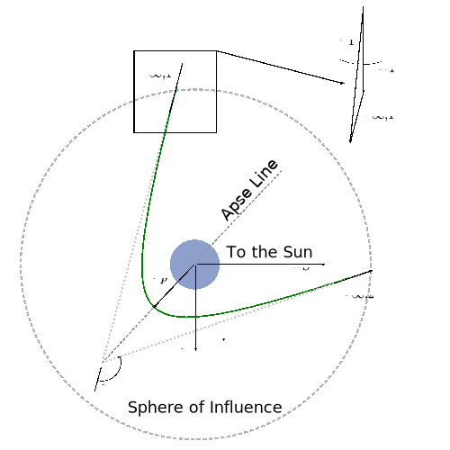
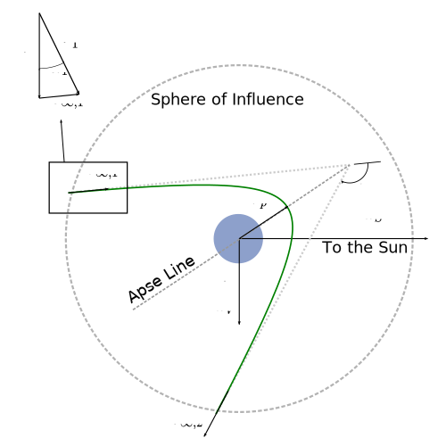

As we discussed in the last section, the options that a spacecraft has when arriving at a planet are to impact the planet, enter a capture orbit, or do a flyby to change its heliocentric velocity vector. In this section, we’ll consider the case of a flyby of the arrival planet.
Let’s begin with a few definitions. All capital letters will refer to heliocentric velocities, while lower case letters refer to geocentric velocities. Furthermore, the superscript \(s\) will refer to the spacecraft, while variables with no superscript refer to the planet. Finally, subscript 1 refers to the arrival point at the sphere of influence and subscript 2 refers to the departure point from the sphere of influence.
The goal in this analysis is to determine the heliocentric velocity vector when the spacecraft exits the sphere of influence, \(\vector{V}_2^s\). This vector is then used to determine the orbital elements of the spacecraft’s modified heliocentric orbit.
To calculate the departure velocity vector, we will treat the arrival and departure events independently. We will also remove the assumption that \(v_{\infty}\) be parallel to the planet’s heliocentric velocity vector.
When the spacecraft arrives at the target planet, it’s trajectory will be a hyperbola relative to the planet. When crossing the sphere of influence of the planet, the spacecraft can be in one of two orientations:
crossing in front of the planet, as shown in Fig. 85, called a leading-side flyby.

Fig. 85 A leading-side planetary flyby. Notice that the spacecraft crosses in front of the planet along the planet’s direction of motion.#
crossing behind the planet, as shown in Fig. 86, called a trailing-side flyby

Fig. 86 A trailing-side planetary flyby. Notice that the spacecraft crosses behind the planet along the planet’s direction of motion.#
The angle \(\delta\), given by Eq. (151), is the turn angle. Note that \(\delta\) is positive counterclockwise, so it is negative for the trailing-side flyby.
To determine the spacecraft’s hyperbolic orbital elements, we need to find \(\vector{v}_{\infty,1}\), the excess velocity vector at arrival. The excess velocity vector can be found by taking the vector difference of the planet and spacecraft heliocentric velocity vectors:
where \(\vector{V}\) is the orbital velocity of the planet and \(\vector{V}_1^s\) is the spacecraft’s heliocentric velocity vector. This vector sum is shown visually in Fig. 85 and Fig. 86 in the inset figure.
In the heliocentric frame, the spacecraft’s velocity can be split into two components:
To simplify the calculation of \(\vector{v}_{\infty}\), we would like to work with unit vectors attached to the planet, rather than the sun. The \(\uvec{u}_r\)-\(\uvec{u}_{\perp}\) coordinate system, which is attached to the heliocentric orbit, can be converted into a geocentric system with the unit vectors \(\uvec{u}_{V}\) and \(\uvec{u}_{S}\).
\(\uvec{u}_V\) points along the planet’s orbital velocity vector. Since we assumed that the planet’s orbit is circular, the planet’s orbital velocity vector is always perpendicular to it’s radial vector. In other words:
Thus, in the geocentric coordinate system, the planet’s orbital velocity is:
(374)#\[\vector{V} = V \uvec{u}_V = \sqrt{\frac{\mu_{\text{sun}}}{R}} \uvec{u}_V\]
where \(R\) is the planet’s orbital radius around the Sun. Similarly, the spacecraft’s heliocentric velocity can be transformed to the geocentric coordinate system:
where \(V_1^s\) is the magnitude of the spacecraft’s heliocentric velocity and \(\alpha_1\) is the angle that \(\vector{V}_1^s\) makes with \(\vector{V}\). Thus, \(\alpha_1\) is the flight path angle of the spacecraft, and its value is found from Eq. (118):
Finally, we can compute the magnitude of the excess velocity:
(378)#\[v_{\infty} = \sqrt{\left(V_1^s\right)^2 + V^2 - 2 V_1^s V \cos\alpha_1}\]
The magnitude \(V_1^s\) can be found from the velocity components in Eq. (371), and \(V\) is given by Eq. (374).
The magnitude of the excess velocity depends only on the semimajor axis of the hyperbola. Since the semimajor axis is constant, the magnitude of the excess velocity is also constant. Thus, we drop the subscript for arrival and departure for the magntiude.
Once we have the magnitude of the excess velocity, and when we specify a value for \(r_p\), we can apply the techniques in the previous section to compute the orbital elements of the hyperbola.
Note
The techniques described in this section can also be used for a capture orbit if the excess velocity vector is not parallel to the planet’s orbital velocity.
Now that we have \(\vector{v}_{\infty,1}\) from Eq. (377), we are ready to calculate the departure trajectory. The \(\vector{v}_{\infty}\) vector is rotated through the turn angle \(\delta\). We need a consistent reference line from which the angle of the \(\vector{v}_{\infty}\) vector can be measured.
The easiest choice for a reference line is the planet’s heliocentric velocity vector. As shown in Fig. 87, we can define an angle \(\phi\) from the planet’s velocity vector \(\vector{V}\) to \(\vector{v}_{\infty}\). \(\phi_1\) is defined for the angle at arrival and \(\phi_2\) is the angle at departure.
Fig. 87 The angles \(\phi_1\) and \(\phi_2\) are defined from the planet’s velocity vector to the excess velocity vector.#
Note that the sign of \(\delta\) is important. For a leading-side flyby \(\delta\) is positive, while for a trailing-side flyby \(\delta\) is negative.
In the geocentric coordinate system, the excess velocity vector has components given by Eq. (377). From a right triangle, the angle \(\phi_1\) is found by:
Using these two velocity components and the known radial distance of the planet from the sun, we can compute the orbital elements of the new heliocentric orbit. The orbital angular momentum is found by:
A spacecraft will use a flyby manuever around Venus to change its heliocentric orbit. The spacecraft departs the orbit of Neptune on a velocity perpendicular to a line to the sun, and meets Venus at a true anomaly of 120° relative to the departure point. The periapsis altitude is 300 km. Calculate the spacecraft’s new heliocentric orbital elements after a leading-side flyby and a trailing-side flyby.
First, we need to calculate the arrival heliocentric velocity vector. The spacecraft departs Neptune’s orbit at aphelion of the transfer orbit. We know the departure point is aphelion because the velocity vector is perpendicular to the radius vector. We can find the orbital elements of the transfer orbit by using the orbit equation, Eq. (113) at the departure and arrival points.
where \(\nu\) at Neptune departure is 180° and \(\nu_1 =\) -60° or 300°. This pair of equations can be simultaneously solved for \(h_1\) and \(e_1\) to give the parameters of the transfer orbit. Solving first for \(e_1\), we find:
This give an eccentricity of \(e_1 =\)0.9644 and \(h_1 =\)4.61E+09 km2/s. With \(e_1\), \(nu_1\), and \(h_1\), we can find the heliocentric velocity components at Venus using Eq. (114) and Eq. (115):
V_p1=h_1/R_VenusV_r1=mu_sun/h_1*e_1*np.sin(nu_1)
The heliocentric velocity components are \(V_{\perp,1}^s =\)42.64 km/s and \(V_{r,1}^s =\)-24.02 km/s. Next, we need to find the excess velocity vector at arrival, and its magnitude:
The spacecraft heliocentric velocity magnitude is \(V_1^s =\)48.94 km/s, the flight path angle is \(\alpha_1 =\)-29.40°, and the velocity of Venus is \(V_{\text{Venus}} =\)35.02 km/s. The excess velocity vector is \(\vector{v}_{\infty,1} =\)7.62\(\uvec{u}_V\) - 24.02\(\uvec{u}_S\) km/s, and its magnitude is \(v_{\infty} =\)25.20 km/s.
Now we can compute the geocentric orbital elements of the flyby trajectory. In particular, we need to calculate the turn angle \(\delta\) using Eq. (151), which requires the eccentricity \(e\) from Eq. (355). Then, we can calculate the \(\phi\) angles.
The eccentricity of the hyperbola is \(e =\)13.4193 and the turn angle is \(\delta =\)8.55°. This gives turn angles of \(\phi_1 =\)72.41° at arrival, \(\phi_2 =\)80.96° when the flyby occurs on the leading side, and \(\phi_2 =\)63.86° for the trailing-side flyby. Notice that \(\delta\) is treated as negative for the trailing-side flyby!
Finally, we can compute the departure excess velocity vector and the departure heliocentric velocity vector, which allows us to compute the new heliocentric orbital elements.
This gives a heliocentric velocity of \(V_2^s =\)46.25 km/s, with components \(V_{\perp,2}^s =\)38.98 km/s and \(V_{r,2}^s =\)-24.89 km/s. This is a decrease of about 2.69 km/s in heliocentric speed, as expected for a leading-side flyby.
The departure angular momentum is found by Eq. (384). From Eq. (385), we find:
For the leading-side flyby the eccentricity is \(e_2 =\)0.8264. Since \(e_2 < 1\), the new heliocentric trajectory is still an ellipse around the sun. The perihelion distance is \(R_{p,2} =\)7.340E+07 km and the aphelion distance is \(R_{a,2} =\)7.722E+08 km. This aphelion distance is approximately at the orbital radius of Jupiter. The true anomaly is \(\nu_2 =\)-73.19°, so the spacecraft is approaching perihelion.
Now let’s do the trailing-side flyby. The calculations are all the same as the leading-side, but we expect the spacecraft to increase its heliocentric speed.
This gives a heliocentric velocity of \(V_2^s =\)51.37 km/s, with components \(V_{\perp,2}^s =\)46.12 km/s and \(V_{r,2}^s =\)-22.63 km/s. This is an increase of about 2.43 km/s in heliocentric speed, as expected for a trailing-side flyby.
For the trailing-side flyby the eccentricity is \(e_2 =\)1.1240. Since \(e_2 > 1\), the new heliocentric trajectory is a hyperbola relative to the sun and the true anomaly of the asymptote is \(\nu_{\infty} =\)152.83°. This means the spacecraft is now on a trajectory to escape the solar system!
The current true anomaly is \(\nu_2 =\)-49.20°, so the spacecraft is approaching perihelion, which will be at a distance of \(R_{p,2} =\)130006 km. Unfortunately, this is inside the equatorial radius of the Sun as shown in Table 9, so the spacecraft would most likely not survive the encounter.

{kind=link}